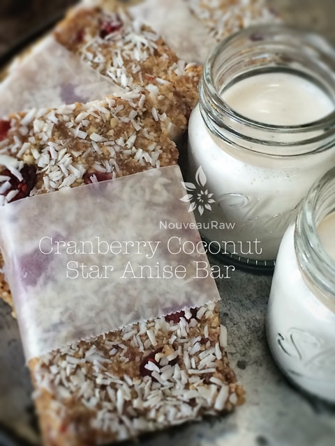

Cranberry Coconut Star Anise Bar
Cranberry Coconut Star Anise Bar

~ raw, vegan, gluten-free, Paleo ~
Looking for a hearty bar that isn’t too sweet and filled with exotic flavors? Good! Because I am about to share a recipe with you. There is a beautiful medley of flavors taking place here… cranberry, coconut and star anise. Star anise is my favorite!
There is more to the star anise than just being the prettiest spice in the rack. Its flower-shaped pods add essential flavoring to popular dishes from several cultures. There are about a handful of spices that I LOVE to inhale, and star anise is one of them… hold in that inhaled breath, and the scent coats your throat, leaving a therapeutic calm. I think we all could use a dose of therapeutic calm, don’t you?
If you can’t get a hold of star anise you could try using anise seed with an added pinch of allspice, although its flavor is different, it can give the bars a pungent, sweet kick and an exotic flair. Add allspice powder in trace amounts; too much could ruin the bars.
As another alternative, use 1-2 teaspoons of crushed anise seed. Anise seed is closely related to star anise seed and has a very similar flavor. However, its flavor is much weaker, so you should use about twice as much anise as a substitute for star anise.
Fennel seeds are another excellent option. They contain anethole, dianethole, and photoanethole, the three same compounds also found in anise, star anise, and licorice. You will need to use twice as much fennel seed as you would have star anise.
And for one last idea for a substitution (gotta give me points for trying) Chinese five-spice powder, which contains cloves, cinnamon, Sichuan pepper, and ground fennel seeds.
And if for some crazy reason you are not to hip to the flavor star anise, skip it altogether. Personally, I loved the flavor combination of the cranberries, coconut, and star anise. :) I tend to find it in my local grocery stores, down the spice aisle, or it may be stocked with Mexican foods near the dried chilies, but another great place to check is an Asian supermarket.
When purchasing star anise, look for whole pieces that aren’t broken. At home, store in a sealed container in a cool dark place. Properly stored, star anise will last for several months. Discard once the flavor fades.
yields 11 bars
- 2 cups cashews, soak & dehydrate
- 1 cup unsweetened dried, shredded coconut
- 1/2 tsp ground Ceylon cinnamon
- 2-4 star anise, ground (1-2 tsp)
- 1/4 tsp Himalayan pink salt
- 1 cup Medjool dates, pitted
- 1/4 cup raw coconut butter, softened
- 1 Tbsp maple syrup
- 1/4 cup diced dried cranberries
Preparation:
- Place the cashews in the food processor, fitted with the “S” blade and process to a small cornmeal size. Place in a small bowl.
- Place the coconut into the food processor and process it to a fine powder.
- Add the cashews back into the machine along with the cinnamon, star anise, and salt. Pulse together.
- Add the dates, coconut butter, and maple syrup. Process until the batter is sticking together.
- Note ~ if the dates are really dry, rehydrate them in warm water to help soften. Discard the soak water and place the dates in the machine.
- To make Paleo, omit the agave.
- Add the cranberries and pulse in.
- Press the bars into a pan and cut into desired shapes and sizes. Wrap the bars individually and store them in the refrigerator or freezer.
- Or dehydrate for 1 hour at 145 degrees (F), then reduce to 115 (F) and continue drying for about 4-6 hours. Just long enough to firm up the outside of the bar, which is what I did. I also pressed the bars into extra shredded coconut.
The Institute of Culinary Ingredients™
- To learn more about maple syrup by clicking (here).
- Click (here) for my thoughts on raw agave nectar.
- Dates are a fantastic ingredient for raw food recipes, click (here) to read why.
- Why do I specify Ceylon cinnamon? Click (here) to learn why.
- What is Himalayan pink salt, and does it matter? Click (here) to read more about it.
- Is coconut butter the same as coconut oil? Click (here) to find out.
Culinary Explanations:
- Why do I start the dehydrator at 145 degrees (F)? Click (here) to learn the reason behind this.
- When working with fresh ingredients, it is essential to taste test as you build a recipe. Learn why (here).
- Don’t own a dehydrator? Learn how to use your oven (here). I do, however honestly believe that it is a worthwhile investment. Click (here) to learn what I use.
© AmieSue.com